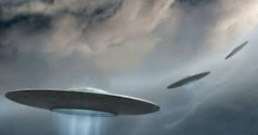

| El acrónimo fue creado para reemplazar al de «platillo volante», ya que a diferencia de este un ovni no tiene por qué ser necesariamente un objeto tecnológico o tripulado (puede ser también una estrella, un meteorito o un avión desconocido), y ha llegado a trascender más allá de las simples observaciones aéreas. Aunque autores como Erich von Däniken o Jacques Vallée han apuntado que los antiguos carros de los dioses o las apariciones y raptos en bosques y pantanos podían ser el equivalente a los relatos ovni actuales, el fenómeno comenzó en 1947, íntimamente vinculado a los medios de comunicación. |  |